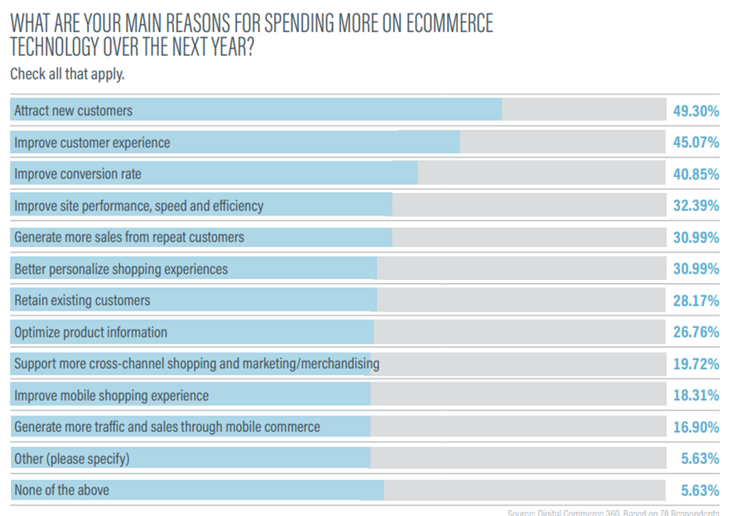
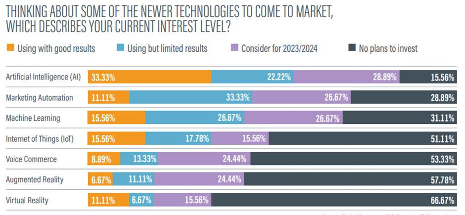
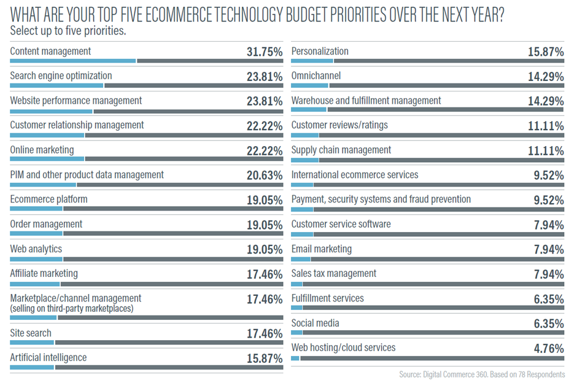

Embracing the Future: Latest Trends in E-commerce to Watch Out For
While assessing the e-commerce landscape for 2024 to understand their latest trends, there was research conducted by digitalcommerce360 among the largest online retailers, e-commerce platform providers, retail chains, consumer brand manufacturers, and other e-commerce companies. It turned out vociferously that this year could be just about exploring new ways to cater to the new generation of online shoppers.
Major strategic goals for e-commerce businesses remain attracting new customers and retaining existing ones. While these remain the underlying core motivational drivers, there are other business needs that surfaced in this survey. They were improving conversion rates, increasing repeat sales from existing customers, and improving the overall customer experience, to name a few.
Find below the areas where e-commerce companies look to invest more, based on the survey conducted:

Given the trends and directions emerging so far from the respondents in the survey, it was concluded that there will be an exponential increase in investments by the end of 2024 (as compared to 2023) to bring out the best in the areas as cited above. More than 50% responded that there would be a sizeable increase in investment in e-commerce technology in 2024. Deep diving further into which technologies e-commerce businesses would like their investments to go, AI topped the list, with marketing automation and machine learning following thereafter. Clearly, it demonstrated an awareness and interest among online retailers in how AI can disrupt and bring business value to their customers.
Find below the respondents’ survey results on the technologies they’re keen to invest in.

Moreover, when it came to aligning their budgets with newer technologies, online retailers prioritized a few areas that could potentially bring in more customer traffic to their website and, in turn, improve their conversions. With the top areas featured below (based on the survey conducted), AI has an instrumental role to play in generating exponential returns for businesses in a faster and more efficient way. For example, writing product descriptions can be AI-driven, which not only saves manual effort (writing for 10,000 products) but also takes care of SEO by changing the keywords or any product-related elements dynamically based on what searches are coming in. MyFashionGPT is a classic example of how product searches can be optimized to suit shoppers’ use of natural language instead of strictly using keywords.

Today, there are umpteen options available to deploy and modify digital commerce platforms. There is also a lot going on among e-commerce players with selecting the right e-commerce platform, the features it should have, and its open architecture to integrate with other interfaces and systems to cater to their customized business needs. Around 41.7% preferred going with this headless commerce.
The e-commerce platform should have the capability to integrate with various other platforms to cater to their business needs., like personalized B2B merchandising, order management, CRM, inventory management, voice-activated ordering, etc. This headless approach gives a lot of flexibility for customers to use this platform and deploy customized applications as per their business needs. They prefer going with a composable deployment strategy, choosing and implementing technology applications from multiple sources. Here, the back-end system remains the same, interacting with the front-end interfaces using APIs that remain independent and customizable based on customer needs.
The next decade would mandate e-commerce technology vendors to provide a customized platform with a lot of open APIs and microservices for their customers to play with, and hence composable e-commerce platforms have a long way to go to cater to their business requirements. It is all about identifying the right set of tools and technologies that fit their near- and long-term needs. This is how companies would look to create business value over technology, creating much better customer experiences. And without a doubt, AI has a big role to play in empowering this entire e-commerce agile ecosystem.
Thanks for reading . Please feel free to share your comments and feedback.